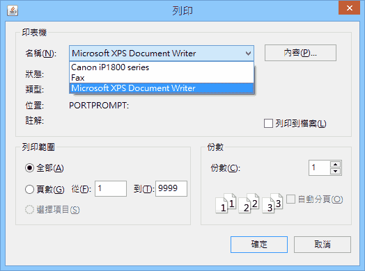
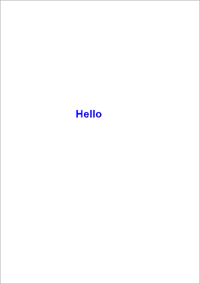

列印
列印的原理有點怪，但講起來也很簡單：「用畫的。」
事前準備
除非你嫌墨匣太多，否則建議安裝 PDFCreator 充當印表機，在練習列印的功能時，將列印結果以 PDF 文件來儲存。或者 Windows Vista 開始內建的 Microsoft XPS Document Writer 也有同樣功能。
這樣在執行列印功能時，就可以不用拿真的印表機來測試，列印的結果改用 PDF 文件或 XPS 文件來輸出與顯示：

將資料列印出來
最標準的列印功能，是將程式設計過程中設置的資料，給列印出來。
基本列印的語法架構
底下範例是最簡單的列印[1]，會在紙張上印出 Hello 字串：
改變文字樣式、取得紙張大小與可列印範圍
你可以透過 Graphics 改變文字的字型、大小、顏色，或其它樣式。而透過 PageFormat 的 getWidth()、getHeight()、getImageableWidth()、getImageableHeight()，可以取得紙張範圍的大小，避免資料列印到外界去了，例如：
自訂紙張格式
或者使用 PageFormat 透過 Paper 自訂紙張尺寸，如下範例，它加大了 A4 紙張的可列印範圍，否則雖然紙張夠大，但允許的可列印範圍不夠，列印時超出範圍的部分會被切割掉：
其它
其它像是透過 PrinterJob 預設份數與頁次範圍等不常用的細節，需要用到時，可查閱 Java API Specification。
本節第二個範例列印出來的結果如下：

將外部檔案當資料來列印
（覺得可有可無，因此無限期草稿中。）
將 Swing 元件當資料來列印
（覺得可有可無，因此無限期草稿中。）